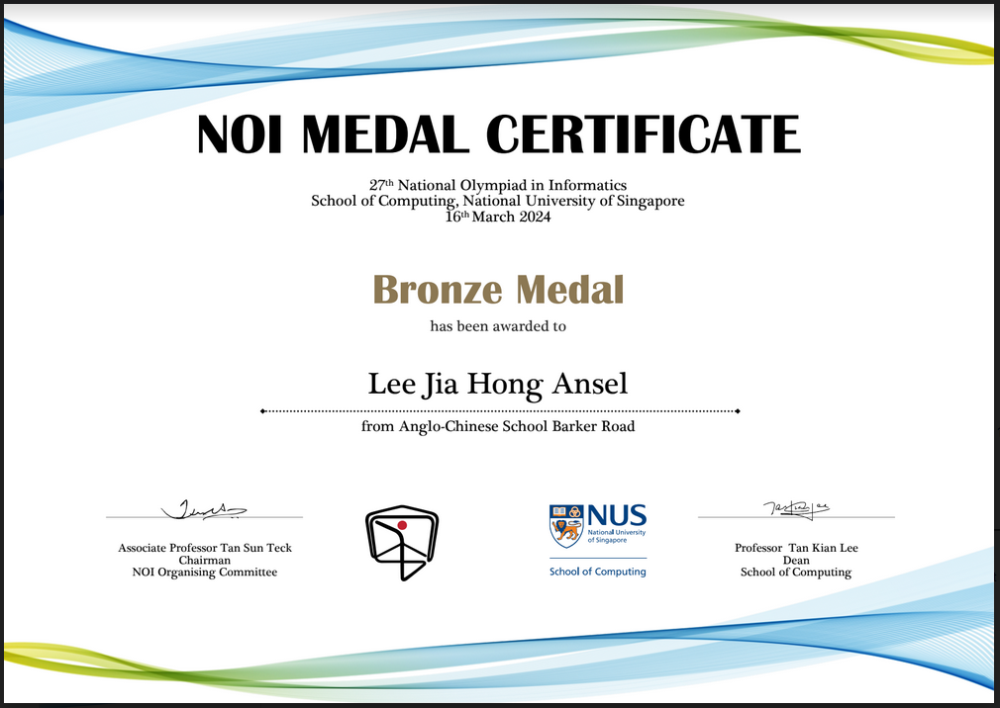
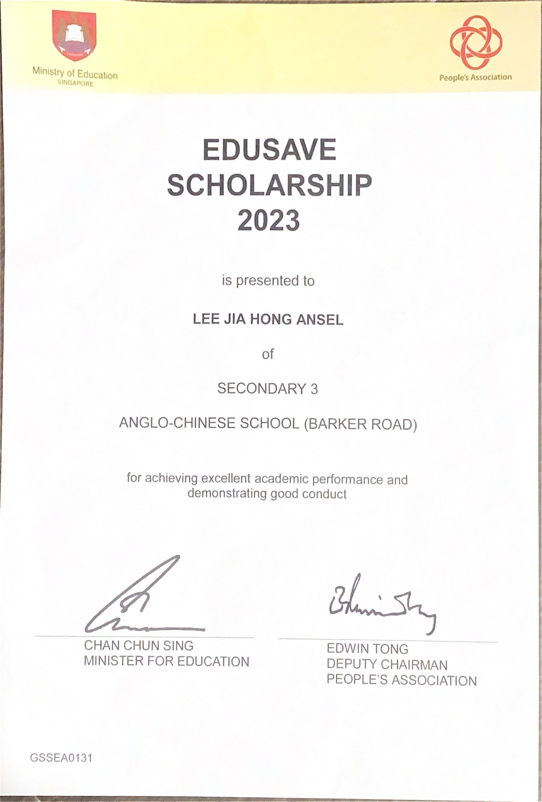
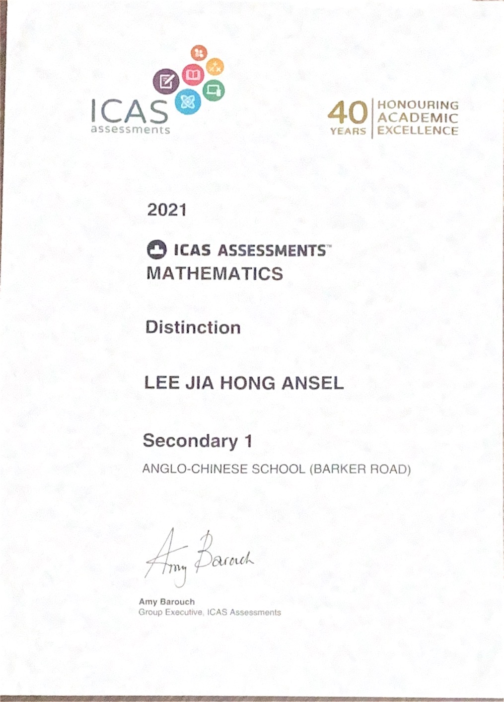

Projects
My portfolio
After being started in a random computing lesson on a Wednesday, before recess, Kevin Langner and I have worked on this site, (Kevin learnt HTML just to help me with this :D) This is the first time I experimaent with transitions, and do a proper write-up for all my projects.
Shared Repository
Query System
This project was originally built for the ACSBR Science Department to inform students of their shifts, with refernce to their name. Over the years, I have added Sign In With Google and password hashing. With the introduction of AllEars by MOE, this project sadly only was used once in 2023.
Open
Repository
Data Sheet
Homework Lister
My first big web development project! Written in 2021,
I created a one-stop shop for all reminders to my classmates
listing, all the homework, announcements and even a (hardcoded)
timetable for my class to refer to there.
This is where I learnt that the Github + Google Apps Script + Google
Sheets "stack" can run my site for free!
Open
Repository
Leading Robotics CCA VIA
Being the in-charge for my CCA's VIA, I planned and taught 12
(unrelated) students basic Spike Prime at MacPherson CC.
Despite the percieved difficulty teaching advanced concepts such as
line tracing without having them zone out, we pressed on and had a
fulfilling time!
Curriculum and slides were planned by me (hence the big comic sans)
and edited by Daniel. CCA Teachers were impressed,
and we managed to engage the learners throughout.

Slides (by request only)
Booklist Project
My last coding project for my school, and my most complicated one yet.
Written at the end of 2023, this booklist listing system is specfically
programmed to accomodate three different systems. Namely, PG1, 2, 3
(Sec 1),
Lower Secondary Express, N(A), N(T) (Sec 2) and Upper Secondary Subject
Combinations (Sec 3 and Sec 4).
It doesn't show the price as my IT department
did not want to look like being biased to Pacific Bookstores, and from
this project I learnt that in the future I should use td and tr
instead of CSS Grid, as
merging cells are a pain (if you're curious, you can see the
mathematics in the JavaScript file in the Repository).
Open
Repository
Data Sheet (by request only)
About Me
I enjoy programming, and thinking of how to solve problems. I find a little bit of troubleshooting entertaining, just that it takes a little too much of my study time.

Other than coding software, I also enjoy building and coding robots.
Having done a little of NXT, EV3, EV3 Classroom and now Spike Prime,
oh how times have changed!
In 2019, I represented Singapore at the World Robot Olympiad in
Hungary. I feel that Robotics is more troubleshooting, keeping
your cool, lifting weights (computer and robots) and running back and
forth between playfields and workstations.
In my freetime during the pandemic, I built a lego lift (destroyed
by my little sister).
Here's a little google site that I made when I was young.
site

I LOVE playing Cities: Skylines.
The splash/cover image for this site is Attractive District station.
Fixing traffic and optimising train interchanges are my favourite
activities. However, if more people take the trains, the roads will be
less congested and there is less to fix :p.
By the way, here's another of my city's cross-platform
train interchanges, aptly named Interchange Park (ES4/DX7).
The Downtown Crossing Line (Spruce Hills DX1 to Ultra Ulu DX9) is blue,
Top-left to SR6/DX6 Art Museum and Bottom-Right to Lalaland (CC9/DX8).
The Southeast Express Line (Grapevine ES1 to NearTheTrees ES7) is
yellow. Left to hideout (ES5) and after a curve, Airport (NS8/ES3) is
on the top right.

When I'm frustrated with my code/homework, I can be found around my piano. I have served in my school's chapel band, and am going for Grade 5 ABRSM this year.

I started on video editing last year. Currently, I
display road, route or station information using inkscape, and add
tunes recorded on my piano to
my Cities: Skylines in-game footage.
Due to my computer's low performance and framerate, I also use
ffmpeg to
drop duplicate frames.
I've recorded multiple videos, such as truck journeys on highway
viaducts and traffic on interchanges, but only fully edited
some. Of those, only a handful are published, as districts
and roads are usually named after my friends.
Achievements

NOI Bronze
In 2023, I learnt C++ just for this competition and the algorithms seem very interesting!
Subject Excellence Prize 2023 - Computing
Some friendly competition with Kevin (who I built this site with), for this prize :D.
Edusave Scholarship 2023
ICAS Comepetition 2021 - Distinction
One of my my medal certificates from math competitions.
...and many more!
Skills
Python
HTML/CSS/JS
C++
LEGO Mindstorms
Scratch
Google Apps Script
+Some communication skills (monitor for 3 years; VIA IC in my
CCA)
For typed code (C++, Web Development), I use VSCode on Windows
For server side operations, I run Google Apps Script that calls a Google
Sheet database
(with formulas to simplify code). This lets me run code for free (can see
Querysystem
for details). The HTML will usually be sent as a file, hosted Github Pages
or
embedded on Google Sites (easier for teachers to control access to
data)